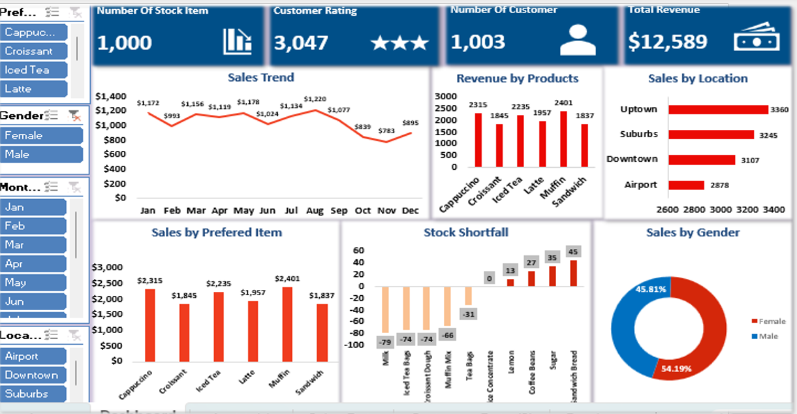
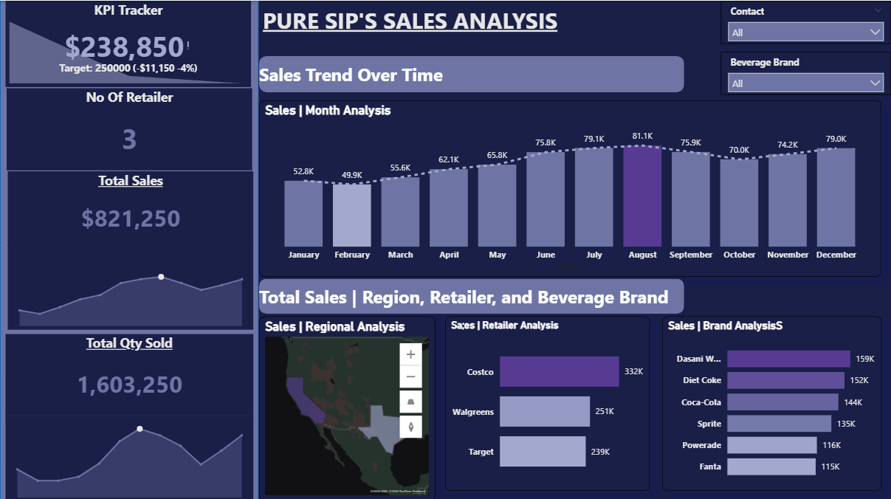

I analyzed NovaMed’s sales, inventory, and customer data using Power BI to uncover trends, optimize stock management, and identify key market opportunities. This project transformed complex datasets into actionable insights, helping the business make smarter decisions and improve operational efficiency.


In this project, I leveraged Tableau to analyze Choco de Luxe’s sales performance across locations, channels, products, and sales teams to uncover insights that drive profitable growth and operational efficiency.
Key insights: Top locations like Piedmont and high-performing channels such as the website highlight the impact of strong execution and market reach. Some revenue-generating areas underperform in delivery efficiency and profitability, signaling opportunities for cost and logistics optimization. Profit targets can be achieved with lower sales volumes by prioritizing high-margin products and disciplined pricing, underscoring the importance of aligned incentives and training. While non-organic products lead in revenue, organic products deliver superior margins and reinforce premium positioning.
The interactive Tableau dashboards enable leaders to monitor performance, refine strategy, and make confident, data-driven decisions.

Using Excel, I analyzed Café Harmony’s sales and operations data to identify trends, performance gaps, and growth opportunities. The analysis delivered insights into product performance, inventory control, customer experience, and staff efficiency—driving clear, actionable recommendations.
Key outcomes included optimizing the menu around top-selling items, improving stock management to reduce waste and shortages, enhancing customer loyalty through personalized offers, and boosting performance with targeted staff incentives and training.
The project turned raw data into practical strategies that improve efficiency, elevate customer satisfaction, and drive profitability.

I used SQL to analyze employee performance, retention, and compensation data to deliver actionable HR insights. Marketing and Engineering recorded the highest turnover, while 71 employees scored below 3.5, signaling the need for targeted coaching, and 9 top performers scored 5.0, highlighting key retention talent. Total salary spend was ₦4.85M, with performance largely aligned to pay, though some inconsistencies exist.
The insights support data-driven actions to improve retention, boost performance, reward excellence, and ensure fair compensation.

I used Power BI to analyze Pure Sip’s 2022 sales performance, transforming raw data into actionable insights. The analysis covered six beverage brands and revealed over 16 million units sold, generating $8.1M in revenue and $6.4M in profit. Coca-Cola emerged as the top-selling product, with Texas and New York leading sales, while July and December were peak months and January–March underperformed.
The insights support targeted promotions during low-performing months, increased advertising for weaker brands, and focused sales campaigns in underperforming states to drive growth.
<